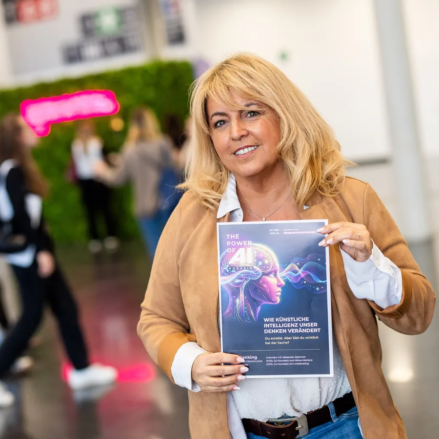
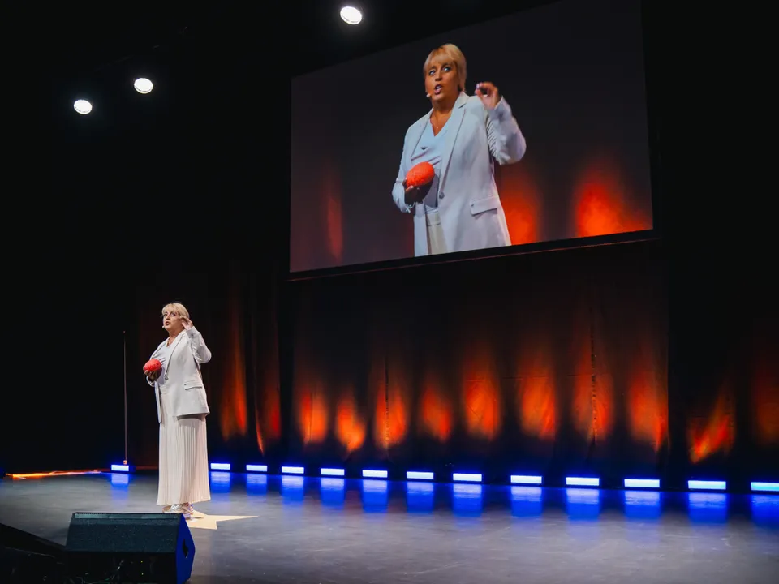
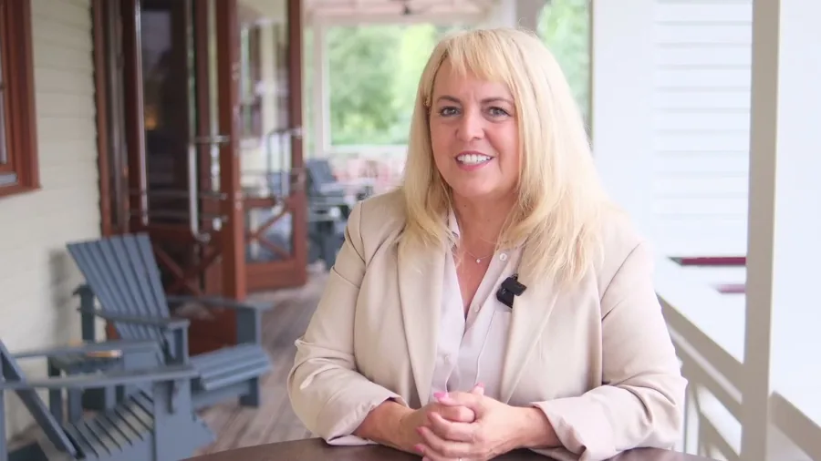

Öffentliches Event · Köln
The Power of AI
Claudia Conen spricht auf The Power of AI in Köln, am 18. Oktober 2026.
Uhrzeit, Ort, Titel deines Beitrags und Hinweis zur Anmeldung: bitte von dir.

Aktuell: 7-Tage-Wirkungskraft-Challenge · Start 26. OktoberChallenge · Start 26.10. · Platz sichernTermin bestätigen
Für Geschäftsführung, Führungskräfte, HR, Vertrieb und Veranstalter.
HauptwegeFür Coaches, Trainer, Speaker, Berater, Autoren und Selbstständige.
HauptwegeClaudia gibt Unternehmensmomenten eine Stimme, eine Richtung und eine Wirkung.
Claudia buchenWorkshop, 90-Tage-Programm oder Sparring: vor Ort oder online.
FormateWer hier spricht und warum Stimme ihr Thema ist.
Hauptwege
Seit 37 Jahren als Coach und Trainerin unterwegs, heute auch als Keynote Speakerin.
Claudia kennenlernenAuf der Bühne und im Workshop: Hier stehen die Termine, bei denen du Claudia Conen live erlebst und spürst, wie menschliche Wirkung im KI-Zeitalter Vertrauen schafft.Vorschlag

Du wirkst immer. Die Frage ist nur: wie?
Überall dort, wo jemand das Wort ergreift, beginnt Wirkung.
Live merkst du, wie deine Stimme, deine Worte und deine Haltung bei anderen ankommen. Das lässt sich nicht lesen, nur erleben.Vorschlag
Termine werden im neuen System aus deiner Terminverwaltung geladen (heute: Supabase, Tabelle website_events). Hier stehen sie von Hand als Vorschau.
Claudia Conen spricht auf The Power of AI in Köln, am 18. Oktober 2026.
Uhrzeit, Ort, Titel deines Beitrags und Hinweis zur Anmeldung: bitte von dir.

Sieben Tage, jeden Tag eine Anleitung, eine Minute Video mit dem Handy, Feedback von Claudia Conen. Kostenfrei, in einer WhatsApp-Gruppe – mit den sieben Schritten, dem Workbook und dem Weg danach.
Die Challenge ist ein Einstieg, kein Hauptangebot. Zielgruppe im Sinne der B2B-Ausrichtung (z. B. als Diagnoseformat für Teams) oder ausblenden: bitte von dir.

Offene B2B-Workshops, öffentliche Vorträge und Rückblicke auf vergangene Bühnen erscheinen hier, sobald Termine feststehen.Vorschlag
Termine, Dauer, Ort und Teilnehmerzahl offener Workshops; weitere Vorträge mit Datum und Veranstalter; Fotos oder Ausschnitte vergangener Events mit Freigabe: bitte von dir. Offen aus der Inventur: Läuft der KI-Workshop „Die Unverwechselbaren“ (/ki-workshop-unverwechselbar) noch, und sollen die Webinare (/wissen-webinare) hier erscheinen?
Claudia Conen – bekannt als „Die Umsatzstimme“ – stärkt die menschliche Wirkungskraft in Unternehmen. Seit 37 Jahren ist sie als Coach und Trainerin unterwegs.
Heute verbindet sie Kommunikation und künstliche Intelligenz. Denn KI kann berechnen, doch Persönlichkeit begeistert, fasziniert und berührt.
Stimme einer Teilnehmerin oder eines Veranstalters zu einem Event (mit Quelle und Freigabe): bitte von dir.
Für The Power of AI über die Seite des Veranstalters. Für die Challenge über die Challenge-Seite.Vorschlag
Ja, als Keynote-Speakerin für Konferenz, Kick-off oder Kundenevent. Schreib ihr über Keynote anfragen.Vorschlag
Zielgruppe der Challenge im Sinne der neuen B2B-Ausrichtung: bitte von dir.
Für Konferenz, Kick-off oder Führungstreffen: Im Gespräch klärt ihr Anlass, Publikum und die Wirkung, die bleiben soll.Vorschlag
Gespräch vereinbaren